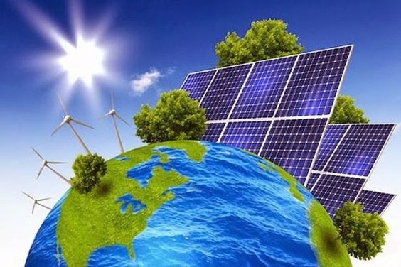

Nós somos uma empresa que presa pelo meio-ambiente sustentável para uma vida melhor a todos, abaixo está tudo aquilo que defendemos e queremos melhorar, aproveite!
Sustentabilidade é um conceito que envolve a busca por equilíbrio entre as necessidades humanas, a preservação ambiental e a viabilidade econômica a longo prazo.
Trata-se de tomar decisões e adotar práticas que não comprometam os recursos naturais e o meio ambiente para que as gerações presentes e futuras possam atender às suas necessidades de forma contínua.
Energia renovável é aquela proveniente de fontes naturais que são inesgotáveis ou se regeneram rapidamente, como a luz solar, o vento, a água em movimento (hidrelétrica), o calor da Terra (geotérmica) e biomassa.
Essas fontes são consideradas sustentáveis porque não se esgotam com o uso e têm menor impacto ambiental em comparação com as fontes de energia não renovável, como combustíveis fósseis (petróleo, carvão, gás natural).
Resumidamente, a pegada ecológica é uma medida que quantifica o impacto humano sobre o meio ambiente, avaliando a quantidade de recursos naturais necessários para sustentar o estilo de vida de uma pessoa, comunidade ou país, bem como para absorver os resíduos produzidos.
Ela abrange diversos aspectos, como o consumo de alimentos, energia, água, moradia, transporte e geração de resíduos. A pegada ecológica é geralmente expressa em unidades de área, como hectares globais, e é usada para avaliar a sustentabilidade e a capacidade do planeta de suprir as demandas humanas sem esgotar os recursos naturais ou prejudicar os ecossistemas.
